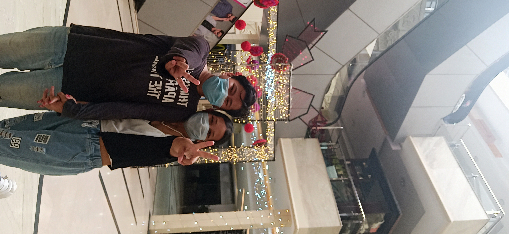

Resume
Summary
Hello, my name is Tenzin Tsega. TBH I'm a little bit afraid but
well that ain't stopping me at this moment.
I have loved computer since Grade 6, I think. And Web development
is how I came across the concept of programming. So even though
it may not be love, I like it.

Education
- Till high school - graduated under the TCV program
- Undergraduate Degree - Bachelor's in Computer Application
- Self Study - Web Dev & Japanese
Work Experience
- 1 Year at Sagility as International Voice Process Executive; I know it might sound cool but it isn't, haha
- Currently working as a Data entry clerk in my hometown; Mcloedganj, Dharamsala
Skills
- Football Skills?
- I can type fast, if that counts
- I like Math in General, so Analytical thinking?
- Working towards my Dream
If you want to know about my Hobbies.
You can contact me from the info available here.